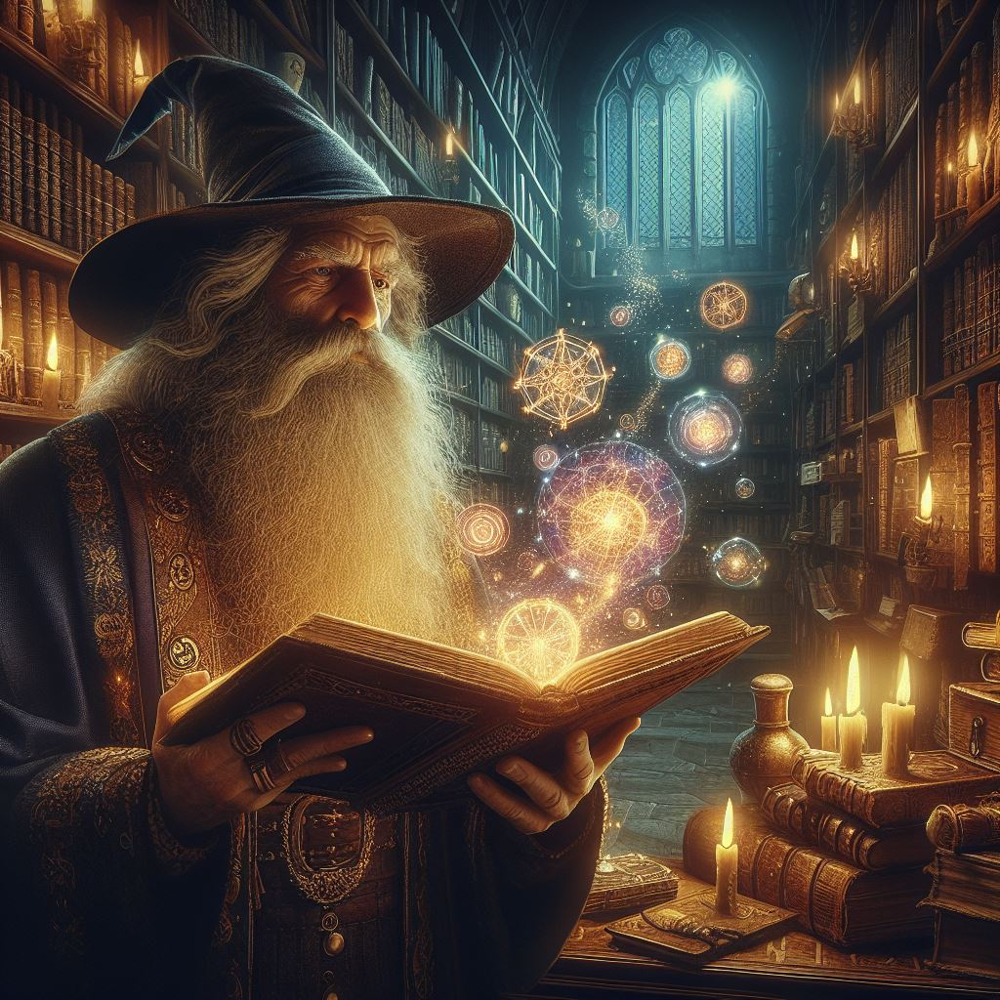

Reproducir Audio
Pausar Audio
Memes de Magos :P

Yo leyendo un libro ancestral para estar preparado para la primera batalla contra el hechicero supremo
(tengo examen)
Yo y mi fiel compañero duende yendo en busca del elixir de la vida eterna
(nos mandaron a comprar coca-cola)
Yo yendo a las catacumbas del infierno a pelear con lideres demoniacos y encontrarme con otros magos de mi nivel
(estoy yendo a la universidad)